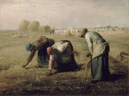
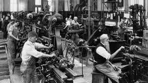

| MOVIMIENTO | CAUSAS | CONSECUENCIAS |
|---|---|---|
| MOVIMIENTOS CAMPESINOS | el campo fue el gran olvido del desarrollo estabilizador. Mientras las ciudades crecian los campesinos quedaban bajo el dominio e caciques locales con tierras insuficientes y sin apoyos para producir |
en distintas regiones de México se levantaron campesinos con demandas concretas:tierra y justicia contra el caciquil acceso al riego y apoyo para competir con el agro estadounidense,ect. |
| MOVIMIENTOS OBREROS | salarios bajos y condiciones de trabajo difiles | movimiento ferrocarrilero | MOVIMIENTO FERROCARRILERO(1958-1959) | sindicatos controlados por el Estado, estos sindicatos silenciaban las demandas auténticas de los trabajadores(Bizberg,1980),paros en distintas lineas ferroviarias,huelgas nacionales,el gobierno de Adolfo López Mateos reacciono con una repreesión dura;miles de trabajadores fueron despedidos,los lideres del movimiento fuero arrestados y enviados a la prisión de Lecumberry,se implanto mayor control sobre el sindicato. |
demostro que los trabajadores podían organizarse a nivel nacional, expuso el carácter autoritario del Estado mexicano frente a la disidencia laboral y se convirtió en un ejemplo para más movimientos. |
| MOVIMIENTO MAGISTERIAL(1958) | El principal líder de esta organización era Othón Salazar, quien tenía una fuerte ideología de izquierdas, al igual que el resto de sus dirigentes. Ante la insuficiente oferta de subida salarial ofrecida por el SNTE, este movimiento convocó una series de manifestaciones en 1956. Estas acciones reivindicativas fueron el antecedente inmediato de lo ocurrido dos años más tarde.La peticiones específicas del Movimiento magisterial quedaron recogidas en un manifiesto redactado en el mismo 1958. En este documento, los maestros comenzaban diciendo que “de acuerdo con las cifras oficiales, en julio de 1956 ganábamos el 14% menos que en 1939, en tanto que en marzo de 1958 la diferencia es más de 35%”.Ante esa situación solicitaban al gobierno aumentar su sueldo hasta los 1 200 pesos. Además, pedían que la cantidad se revisara anualmente conforme al alza de los precios.Por otra parte, también exigían poder jubilarse cuando llevaran 30 años de profesión y mantener en su pensión el mismo sueldo que hubieran recibido el último año. Los maestros pedían que sus familiares fueran cubiertos por el servicio médico y que no tuvieran que pagar las medicinas.Por último, pedían democratizar las condiciones para mejorar su nivel profesional y en la elección de representantes. | La respuesta del gobierno fue reprimir violentamente las manifestaciones. La actuación policial y militar causó la muerte de varios manifestantes, así como un gran número de heridos. La tensión creció con esta represión y el día 19 hubo una nueva marcha hacia el Zócalo. Además de las peticiones anteriores, los convocantes exigían que se depuraran responsabilidades por la violencia desatada.La nueva manifestación fue otra vez reprimida con dureza, lo que provocó la suspensión de las clases. Los líderes del Movimiento Revolucionario del Magisterio entregaron sus peticiones directamente a la SEP, sin pasar por el SNTE.Sin embargo, el SNTE, que actuaba siguiendo la postura del gobierno, no aceptó las peticiones. Según sus mandatarios, las negociaciones solo podían llevarse a cabo con el SNTE, ya que consideraban ilegal al MRM.El MRM logró un apoyo de casi el 90% de los maestros a sus demandas, por lo que la huelga que se estaba llevandoa cabo era casi completa.Uno de los logros más importantes de los maestros del Movimiento magisterial fue conseguircrear una nueva organización sindical al margen de la oficial.Con la ocupación de la SEP, la tensión entre distintos sectores (no solo los maestros) y el gobierno entró en una nueva fase. Los empresarios exigieron que el edificio fuera desalojado utilizando todo tipo de medidas, aunque implicaran una gran violencia.Por su parte, la Asociación de Banqueros pidió que los maestros considerados socialistas y comunistas fueran purgados de las escuelas.Esta reacción de los empresarios, que llegaron a pedir el estado de sitio, muestra que el Movimiento magisterial era visto como una amenaza política para ellos. |
| MOVIMIENTO MÉDICO(1964-1965) | Todo comenzó por la mañana, cuando los 200 médicos residentes que laboraban en este hospital, esperaban el pago del aguinaldo. En los pasillos, los internos comentaban lo que pensaban hacer al recibir el pago. Sus jornadas laborales se extendían más allá de las horas normales que les correspondían, no recibían el mejor trato de sus superiores y los ingresos como médicos internos o becario rondaban los 400 pesos mensuales, cuando sus colegas de planta percibían 1 500 pesos al mes. Días antes había surgido el rumor de que se les negaría la prestación anual de aguinaldo. Hubo dudas y angustia, esperanzas de que sólo se tratara de una broma, pero terminó por ser confirmada por el doctor José Ángel Gutiérrez Sánchez, director del hospital. El aguinaldo, que se entregaba desde tres años antes, esta vez no se haría efectivo. La respuesta fue una ola de protestas y la adopción de una huelga parcial. Con rapidez, desde otros hospitales se decidió apoyarlos. Los médicos residentes e internos del Hospital Juárez de la Secretaría de Salubridad y Asistencia (SSA), del Hospital Colonia, el Servicio Médico de los Ferrocarrileros, el Hospital San Fernando del Instituto Mexicano del Seguro Social (IMSS) y el Hospital General de México se adhirieron al movimiento al no recibir tampoco la bonificación. Los periódicos nacionales informaron al día siguiente que había 670 médicos en paro y que, al parecer, el dinero de los aguinaldos había sido destinado a la construcción de obras. | A unos días de celebrarse el primer informe de gobierno de Gustavo Díaz Ordaz, las autoridades gubernamentales decidieron ponerle fin al movimiento. El Centro Hospitalario 20 de Noviembre, el Hospital Colonia de los Ferrocarriles, así como el Hospital de Pediatría del Centro Médico del IMSS, fueron ocupados por un contingente de 100 granaderos obligando a todo el personal a desalojar los edificios. El director del ISSSTE, Rómulo Sánchez Mireles, encabezó el contingente hasta el interior del Hospital 20 de Noviembre y ordenó a todo el personal que desocupara el edificio antes de diez minutos. Cerca de 500 médicos y enfermeras fueron golpeados y arrojados a la calle y sus puestos ocupados por médicos militares y enfermeras, quienes se encargaron de proporcionar servicios y atenciones urgentes en el hospital. |
| MOVIMIENTO ESTUDIANTIL(1968) | Las causas del movimiento estudiantil de 1968 en México incluyeron unaprofunda represión gubernamental contra estudiantes (especialmente tras enfrentamientos en julio), la falta de libertades democráticas y el autoritarismo del régimen del PRI. Estudiantes exigían el fin de la brutalidad policial (granaderos), la libertad de presos políticos y diálogo abierto, impulsados también por el contexto global de protestas juveniles y la desigualdad social | La matanza en Tlatelolco rompió la confianza de la clase media y de la intelectualidad en el gobierno de Gustavo Díaz Ordaz, evidenciando el autoritarismo y la represión como forma de control social.Aunque a corto plazo el movimiento fue reprimido, a largo plazo forzó una transformación en el sistema político, impulsando reformas electorales en años posteriores para permitir mayor pluralidad y libertad de expresión. Surgieron nuevos movimientos sociales y se consolidaron las asambleas y comités de lucha, fomentando una ciudadanía más activa, crítica y organizada fuera del control corporativo del partido hegemónico.Se rompió con valores patriarcales y tradicionales, provocando cambios en las relaciones de género, la educación y la cultura, promoviendo una visión más moderna y abierta.A pesar de la ocupación militar de Ciudad Universitaria, el movimiento reafirmó la importancia de la autonomía universitaria (UNAM) y el politécnico (IPN) como espacios de libertad de pensamiento.El movimiento dejó una cicatriz profunda debido a la detención arbitraria, tortura y asesinato de estudiantes, lo que generó un reclamo histórico de justicia y memoria |